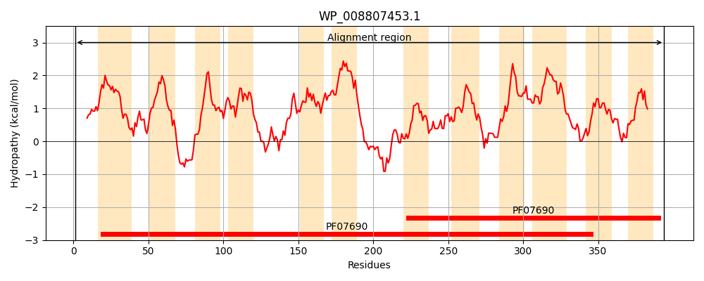
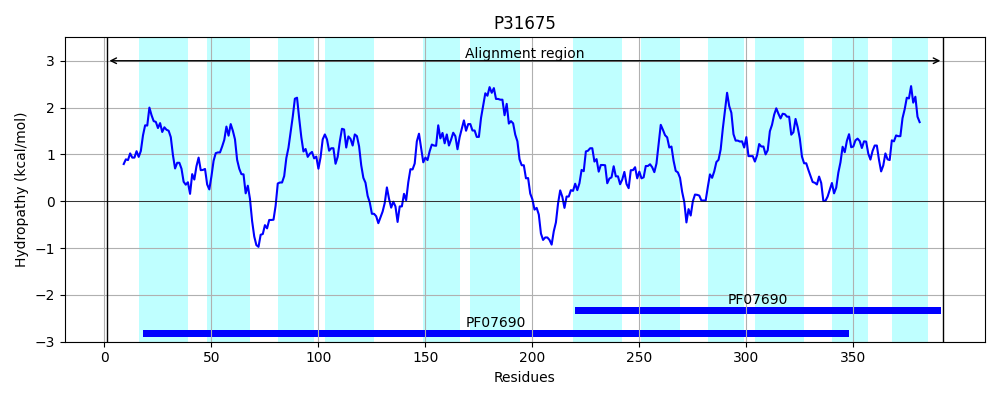
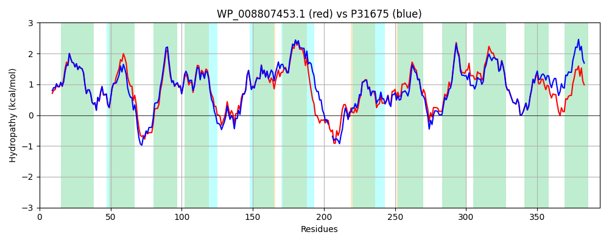

Hit Accession: P31675
Hit TCID: 2.A.1.20.1
Hit Description: gnl|BL_ORD_ID|9794 gnl|TC-DB|P31675|2.A.1.20.1 Sugar efflux transporter A - Escherichia coli.
Mach Len: 394
e:0.000000
Query TMS Count : 12
Hit TMS Count: 12
TMS-Overlap Score: 10.950000
Predicted Substrates:CHEBI:45745;streptomycin, CHEBI:6104;kanamycin, CHEBI:61448;isopropyl beta-D-thiogalactopyranoside, CHEBI:25679;oligosaccharide, CHEBI:10379;beta-D-Gal-(1->3)-beta-D-GlcNAc-(1->3)-beta-D-Gal-(1->4)-D-Glc, CHEBI:6668;maltose, CHEBI:3522;cellobiose, CHEBI:6353;alpha-lactose, CHEBI:320061;methyl alpha-D-glucopyranoside, CHEBI:24163;galactoside, CHEBI:5418;glucose
BLAST Alignment:
Score: 1717 , Bit scores: 665 bits, E-value: 0.0e+00, Alignment length: 394, Percentage identity: 85
Query: 1 MLWLMTMGRRLNGVYAAFMLVAFMMGVAGALQAPTLSLFLSREVGAQPFWVGLFYTVNAIAGILVSLALAKRSDSRGDRRRLIMLCCLMAVGNALLFAFNRHYLTLITCGVMLASIANAAMPQLFALAREYADSSAREVVMFSSIMRAQLSLAWVIGPPLAFMLALNYGFTTMFSIAAGIFVISLALIAIKLPSVPRVEQPSEEAAALVQAGGWQDKNVRMLFIASTLMWTCNTMYIIDMPLWISNDLGLPDSLAGILMGTAAGLEIPAMILAGYYVKRFGKRKMMVAAVAAGVLFYAGLILFHGRTALLALQLFNAVFIGIIAGIGMLWFQDLMPGRAGAATTLFTNSISTGVILAGVMQGALSQSYGHASVYWTIAAISLVTLFLTSRVKDI 394
M+W+MTM RR+NGVYAAFMLVAFMMGVAGALQAPTLSLFLSREVGAQPFW+GLFYTVNAIAGI VSL LAKRSDS+GDRR+LI+ CCLMA+GNALLFAFNRHYLTLITCGV+LAS+AN AMPQLFALAREYAD+SAREVVMFSS+MRAQLSLAWVIGPPLAFMLALNYGFT MFSIAAGIF +SL LIA LPSV RVE PSE AL GGWQD NVRMLF+ASTLMWTCNTMYIIDMPLWIS++LGLPD LAG LMGTAAGLEIPAMILAGYYVKR+GKR+MMV AVAAGVLFY GLI F+ R AL+ LQLFNAVFIGI+AGIGMLWFQDLMPGRAGAATTLFTNSISTGVILAGV+QGA++QS+GH +VYW IA IS+V LFLT++VKD+
Sbjct: 1 MIWIMTMARRMNGVYAAFMLVAFMMGVAGALQAPTLSLFLSREVGAQPFWIGLFYTVNAIAGIGVSLWLAKRSDSQGDRRKLIIFCCLMAIGNALLFAFNRHYLTLITCGVLLASLANTAMPQLFALAREYADNSAREVVMFSSVMRAQLSLAWVIGPPLAFMLALNYGFTVMFSIAAGIFTLSLVLIAFMLPSVARVELPSEN--ALSMQGGWQDSNVRMLFVASTLMWTCNTMYIIDMPLWISSELGLPDKLAGFLMGTAAGLEIPAMILAGYYVKRYGKRRMMVIAVAAGVLFYTGLIFFNSRMALMTLQLFNAVFIGIVAGIGMLWFQDLMPGRAGAATTLFTNSISTGVILAGVIQGAIAQSWGHFAVYWVIAVISVVALFLTAKVKDV 392 | Protein Hydropathy Plots: |
|---|
|  |  |
Pairwise Alignment-Hydropathy Plot:
|
|---|
|  |